Обзор и настройка модема Mikrotik R11e-LTE
Автор: Андрей Торженов
Обновление от:
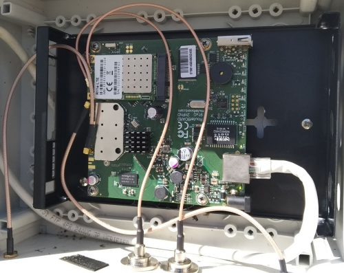
3G / 4G модем Mikrotik R11e-LTE. Обзор, настройка и сравнение с USB модемами со Stick и Hilink прошивками.
Всё, что описано в данной статье, относится и к LHG LTE и SXT LTE, wAP LTE и LtAP mini, т.к. в данный маршрутизаторах используется такой же модем.
У Mikrotik есть два miniPCI-e модема:
R11e-LTE поддерживает 2G, 3G и 4G, а R11e-4G поддерживает только 4G и другие LTE диапазоны (частоты).
|
Mikrotik R11e-LTE |
|
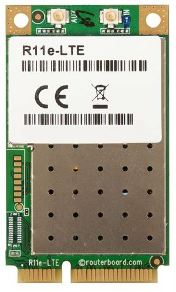 |
|
2G Category: Class 12 |
|
3G Category: R7 (21Mbps Downlinks, 5.76Mbps Uplink) (DC-HSPA+ не поддерживает!) |
|
LTE Category: 4 (150Mbps Downlink, 50Mbps Uplink) |
|
LTE FDD bands: 1 (2100MHz) / 2 (1900MHz) / 3 (1800MHz) / 7 (2600MHz) / 8 (900 MHz) / 20 (800MHz) |
|
LTE TDD bands: 38 (2600MHz) / 40 (2300MHz) |
|
LTE Channel Bandwidth: 1.4/3/5/10/15/20 MHz |
|
Connectors: 2x uFL |
|
Рабочая температура: -30°C .. +70°C |
|
Описание: R11e-LTE.pdf |
|
Mikrotik R11e-4G |
|
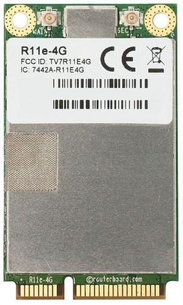 |
|
2G Category: не поддерживает |
|
3G Category: не поддерживает |
|
LTE Category: 4 (150Mbps Downlink, 50Mbps Uplink) |
|
LTE FDD bands: 3 (1800MHz) / 7 (2600MHz) / 20 (800MHz) / 31 (450MHz) |
|
LTE TDD bands: 41n (2500MHz) / 42 (3500MHz) / 43 (3700MHz) |
|
LTE Channel Bandwidth: 5/10/15/20 MHz |
|
Connectors: 2x uFL |
|
Рабочая температура: -30°C .. +70°C |
|
Описание: R11e-4G.pdf |
Рассматривать будем R11e-LTE, но многое будет относиться и к R11e-4G.
Модем видится в Mikrotik следующим образом
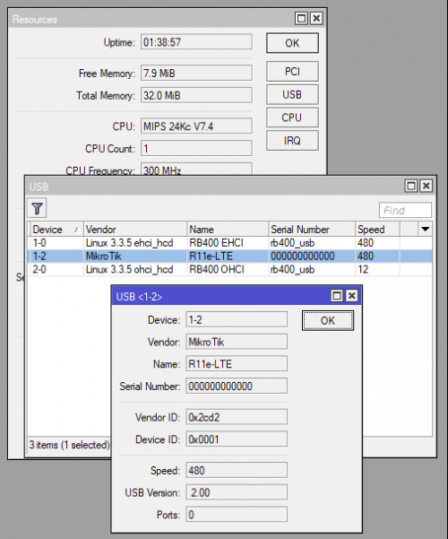
Пример команд в консоли
/system resource usb print detail ... 2 device="1-2" vendor="MikroTik" name="R11e-LTE" serial-number="000000000000" vendor-id="0x2cd2" device-id="0x0001" speed="480" usb-version=" 2.00"
|
1 2 3 4 5 |
/system resource usb print detail 2 device="1-2" vendor="MikroTik" name="R11e-LTE" serial-number="000000000000" vendor-id="0x2cd2" device-id="0x0001" speed="480" usb-version=" 2.00" |
Первое, что нужно сделать после покупки модема, это обновить прошивку. Делается это только из консоли.
Прошивка обновляется через мобильную связь и соответственно в модем должна быть установлена SIM карта и модем должен иметь доступ в мобильный Интернет.
Текущая версия прошивки.
/interface lte firmware-upgrade lte1 installed: MikroTik_CP_2.160.000_v008 latest: MikroTik_CP_2.160.000_v011
|
1 2 3 4 5 |
/interface lte firmware-upgrade lte1 installed: MikroTik_CP_2.160.000_v008 |
Видим, что есть новая прошивка, запускаем обновление.
/interface lte firmware-upgrade lte1 upgrade=yes status: downloading via LTE connection (>1min) -- [Q quit|D dump|C-z pause]
|
1 2 3 4 5 |
/interface lte firmware-upgrade lte1 upgrade=yes |
Ждём минуты две, пока скачивается прошивка.
В другом терминальном окне можно посмотреть процент скачивания.
/interface lte at-chat lte1 input="AT+CHECKATUPGRADE" output: +CHECKATUPGRADE:0x1,99 OK /interface lte at-chat lte1 input="AT+CHECKATUPGRADE" output: +CHECKATUPGRADE:0x0,100
|
1 2 3 4 5 6 7 8 |
/interface lte at-chat lte1 input="AT+CHECKATUPGRADE" output: +CHECKATUPGRADE:0x1,99 /interface lte at-chat lte1 input="AT+CHECKATUPGRADE" |
99 и 100 это проценты скаченного.
После того, как скачается прошивка, начнётся процесс установки прошивки.
status: installing (wait for additional ~2min to complete)
|
1 2 3 |
Ждём примерно 5 минут и перезагружаем модем по питанию или даём AT команду на перезагрузку.
/interface lte at-chat lte1 input="AT+reset" output: OK
|
1 2 3 4 |
Ждём секунд 40 и проверяем версию ПО.
/interface lte firmware-upgrade lte1 installed: MikroTik_CP_2.160.000_v011 latest: MikroTik_CP_2.160.000_v011
|
1 2 3 4 5 |
/interface lte firmware-upgrade lte1 installed: MikroTik_CP_2.160.000_v011 |
У нас актуальная версия прошивки.
Настройка подачи питания на модем
Указываем что у нас используется mini-PCIe модем.
System > Routerboard: USB
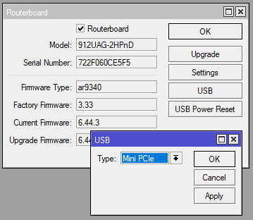
Модем Mikrotik R11e-LTE. Питание
Пример команд в консоли
/system routerboard usb set type=mini-PCIe
|
1 2 3 |
Может возникнуть ситуация, когда после перезагрузки Mikrotik модем R11e-LTE не распознается. Проблема в том, что модем не всегда успевает загрузится вместе с Mikrotik. Нужно поставить задержку подачи питания на модем.
System > Routerboard: Settings
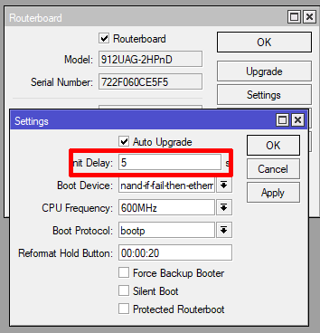
Модем Mikrotik R11e-LTE. Задержка подачи питания
Пример команд в консоли
/system routerboard settings set init-delay=5s
|
1 2 3 |
В Mikrotik модем виден как LTE интерфейс.
Заходим в настройки LTE интерфейса.
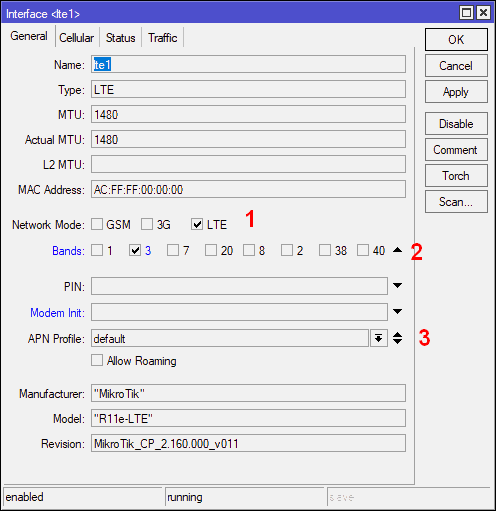
Модем Mikrotik R11e-LTE. Настройки General
На этой закладки мы можем жёстко настроить тип сети (1), диапазоны сети (2) и выбрать настройки APN (3).
Пример команд в консоли
/interface lte set lte1 band=3 network-mode=lte /interface lte print Flags: X - disabled, R - running 0 ;;; resetting name="lte1" mtu=1480 mac-address=AC:FF:FF:00:00:00 apn-profiles=default network-mode=lte band=3
|
1 2 3 4 5 6 7 8 |
/interface lte set lte1 band=3 network-mode=lte Flags: X - disabled, R - running name="lte1" mtu=1480 mac-address=AC:FF:FF:00:00:00 apn-profiles=default network-mode=lte band=3 |
Настройка APN (получение IP по DHCP)
Модем получает IP от мобильного оператора по DHCP, но настраивается это не в DHCP клиенте Mikrotik’а, а в настройках APN (данное решение не самое очевидное).
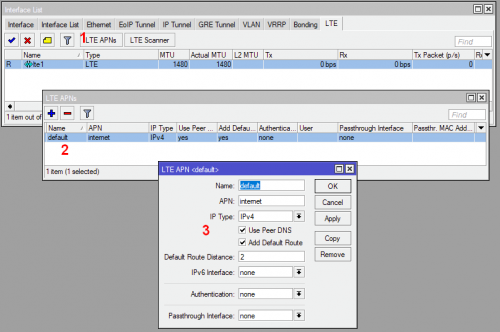
Модем Mikrotik R11e-LTE. Настройки APN
В меню интерфейсов заходим на закладку LTE, нажимаем кнопку LTE APNs (1), выбираем нужный APN (2) и открывается окно с настройками (3).
Именно тут настраивается и получение шлюза по умолчанию и DNS и другое.
Пример команд в консоли
/interface lte apn print Flags: * - default 0 * name="default" apn="internet" use-peer-dns=yes add-default-route=yes default-route-distance=2 /interface lte apn set default-route-distance=3 numbers=0 /interface lte apn print Flags: * - default 0 * name="default" apn="internet" use-peer-dns=yes add-default-route=yes default-route-distance=3 /interface lte apn export /interface lte apn set [ find default=yes ] default-route-distance=3
Отображение состояния сотовой сети
Модем предоставляет подробную диагностическую информацию о состоянии сети сотового оператора. Это очень помогает в настройке антенны на базовую станцию, анализа радиообстановки, шумов, уровня сигнала и т.д.
Эти данные можно использовать в скриптах и например в случае изменения уровня сигнала, отправлять на модем какую либо AT команду с помощью команды at-chat.
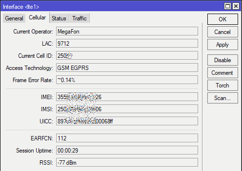
Модем Mikrotik R11e-LTE. Состояние 2G сети
Пример команд в консоли
[admin@2keep.net] > /interface lte info lte1 once pin-status: no password required functionality: full registration-status: registered manufacturer: "MikroTik" model: "R11e-LTE" revision: MikroTik_CP_2.160.000_v011 current-operator: MegaFon lac: 9712 current-cellid: 250xx access-technology: GSM EGPRS session-uptime: 47s imei: 355xxxxxxxxxx26 imsi: 250xxxxxxxxxx06 uicc: 897xxxxxxxxxx068xf subscriber-number: +CME ERROR: 100 earfcn: 112 frame-error-rate: ~0.14% rssi: -77dBm
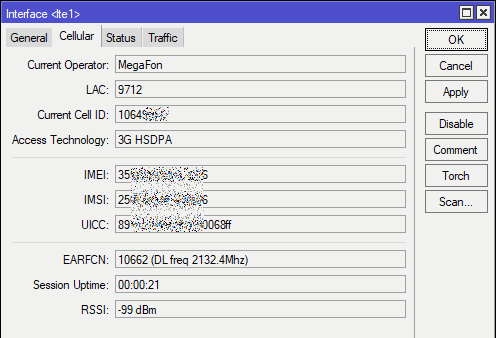
Модем Mikrotik R11e-LTE. Состояние 3G сети
Пример команд в консоли
/interface lte info lte1 once pin-status: no password required functionality: full registration-status: registered manufacturer: "MikroTik" model: "R11e-LTE" revision: MikroTik_CP_2.160.000_v011 current-operator: MegaFon lac: 9712 current-cellid: 10649xxx access-technology: 3G HSDPA session-uptime: 37s imei: 35565xxxxxxxxx6 imsi: 2500xxxxxxxxxx6 uicc: 897010xxxxxxxxx0xxxf subscriber-number: +CME ERROR: 100 earfcn: 10662 (DL freq 2132.4Mhz) rssi: -99dBm
|
1 2 3 4 5 6 7 8 9 10 11 12 13 14 15 16 17 18 19 20 21 |
pin-status: no password required registration-status: registered revision: MikroTik_CP_2.160.000_v011 subscriber-number: +CME ERROR: 100 |
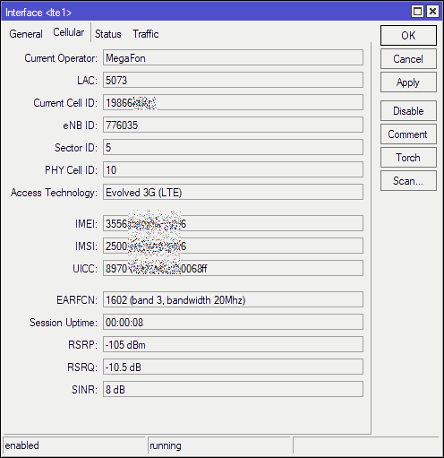
Модем Mikrotik R11e-LTE. Состояние 4G/LTE сети
Пример команд в консоли
/interface lte info lte1 once pin-status: no password required functionality: full registration-status: registered manufacturer: "MikroTik" model: "R11e-LTE" revision: MikroTik_CP_2.160.000_v011 current-operator: MegaFon lac: 5073 current-cellid: 198664xxx enb-id: 776035 sector-id: 5 phy-cellid: 10 access-technology: Evolved 3G (LTE) session-uptime: 18s imei: 35565xxxxxxxxx6 imsi: 25002xxxxxxxxx6 uicc: 89701xxxxxxxxxxxxxx subscriber-number: +CME ERROR: 100 earfcn: 1602 (band 3, bandwidth 20Mhz) rsrp: -103dBm rsrq: -10dB sinr: 8dB
Как видим, информация очень подробная. Тут есть и диапазоны и частоты и качество сигнала и т.д.
Данную информацию можно анализировать в скриптах и отправлять СМС или email в случае если например сигнал изменился.
С помощью модема можно проводить радиоразведку. Смотреть какие есть в эфире операторы, какие уровни сигнала, какие базовые станции.
Для этого в модеме есть две функции — LTE Scanner и Cell Monitor.
Пока работает только в консоли (ROS 6.44.3).
Данная функция позволяет определить в эфире, какие есть ещё базовые станции/секторы (БС) оператора, SIM карта которого стоит в модеме.
Если БС к которой вы сейчас подключились, очень загружена и низакая скорость Интернет’а, можно настроится на соседнюю, возможно она менее нагружена.
/interface lte cell-monitor lte1 PHY-CELLID BAND EARFCN RSRP RSRQ RSSI 10 B7 2850 -114dBm -8dB 10 B7 3048 -119dBm -10.5dB 13 B7 2850 -128dBm -19.5dB 13 B7 3048 -125dBm -18dB 247 B3 1602 -117dBm -18.5dB 254 B20 6350 -118dBm -15dB 433 B3 1602 -115dBm -15.5dB
|
1 2 3 4 5 6 7 8 9 10 11 12 |
/interface lte cell-monitor lte1 |
Мы видим и частоты и уровни сигнала БС.
Данная функция позволяет просканировать эфир, и посмотреть, каких операторов и с какими уровнями сигнала видит модем.
В версии ROS 6.44.3 и прошивки модема MikroTik_CP_2.160.000_v011 эта функция не работает, обновитесь.
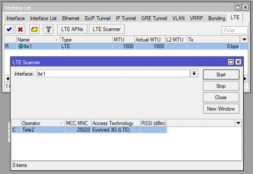
Модем Mikrotik R11e-LTE. LTE сканер
Пример команд в консоли
|
1 2 3 |
В случае проблем, можно включить расширенные логи взаимодействия модем с сетью сотового оператора и Mikrotik’ом.
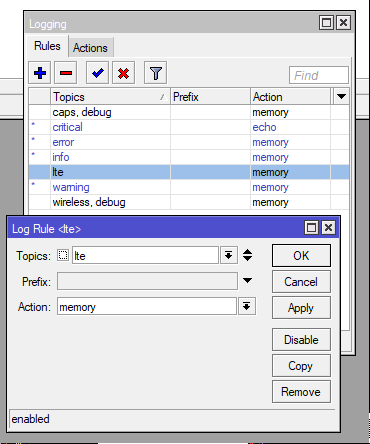
Модем Mikrotik R11e-LTE. Настройка логов
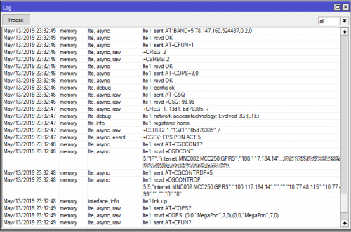
Пример команд в консоли
/system logging add add topics=lte /log print 23:32:33 lte,async lte1: rcvd OK 23:32:33 lte,async lte1: sent AT+CFUN? 23:32:33 lte,async lte1: rcvd +CFUN: 0 23:32:33 lte,async lte1: sent AT+CFUN=4 23:32:38 lte,async,event ^SIMST: 0 23:32:38 lte,async lte1: rcvd OK 23:32:38 lte,async lte1: sent AT+CMEE=2 23:32:38 lte,async lte1: rcvd OK 23:32:38 lte,async lte1: sent AT+CREG=2 23:32:38 lte,async lte1: rcvd OK 23:32:38 lte,async lte1: sent AT+CGREG=2 23:32:38 lte,async lte1: rcvd OK 23:32:38 lte,async lte1: sent AT+CEREG=2 23:32:38 lte,async lte1: rcvd OK 23:32:38 lte,async lte1: sent AT+CGEREP=2,0 23:32:38 lte,async lte1: rcvd OK 23:32:38 lte,async lte1: sent AT+CMGF=0 23:32:38 lte,async lte1: rcvd OK 23:32:38 lte,async lte1: sent AT+CNMI=1,1,0,1,0 23:32:38 lte,async lte1: rcvd OK 23:32:38 lte,async lte1: sent AT+EEMOPT=1 23:32:38 lte,async lte1: rcvd OK 23:32:38 lte,async lte1: sent AT*MRD_SN? 23:32:39 lte,async lte1: rcvd *MRD_SN:72344D346BFA0 23:32:39 lte,debug lte serial: *MRD_SN:72553D6BFA0 23:32:39 lte,async lte1: sent AT+CFUN=4 23:32:39 lte,async,event +MSTK: 11, D081970103052346456457560043004370432043B043504470435043D0438044F0F0C84800421043F043E044004420F10858008568204380F10868004240438043D0430043D0441044B0F1087800 23:32:39 lte,async,event 421043F044004300432034645645104490435043D04380435 23:32:39 lte,async lte1: rcvd OK 23:32:39 lte,async lte1: sent AT*CGDFLT=0,"IP","internet",,,,,,,,,,1,0,,,,,,,1 23:32:39 lte,async lte1: rcvd OK 23:32:39 lte,async lte1: sent AT*CGDFAUTH=0,0 23:32:39 lte,async lte1: rcvd OK 23:32:39 lte,async lte1: sent AT+CPIN? 23:32:39 lte,async lte1: rcvd +CME ERROR: SIM busy 23:32:39 lte,async,event +CPIN: READY 23:32:39 lte,async,event ^SIMST: 1 23:32:39 lte,async,event +MSTK: 14 23:32:39 lte,async,event +CPIN: READY 23:32:39 lte,async,event ^SIMST: 1 23:32:41 lte,async lte1: sent AT+CPIN? 23:32:41 lte,async lte1: rcvd +CPIN: READY 23:32:41 lte,async,event +MMSG: 2, 0 23:32:41 lte,async,event +MMSG: 3, 0 23:32:41 lte,async,event +MPBK: 1 23:32:41 lte,async,event +MMSG: 0, 0 23:32:45 lte,async lte1: sent AT+CPMS="SM","SM","SM" 23:32:45 lte,async lte1: rcvd +CPMS: 5,15,5,15,0,0 23:32:45 lte,async lte1: sent AT+CFUN? 23:32:45 lte,async lte1: rcvd +CFUN: 4 23:32:45 lte,async lte1: sent AT+CNUM 23:32:45 lte,async lte1: rcvd +CME ERROR: 100 23:32:45 lte,async lte1: sent AT+CIMI 23:32:45 lte,async lte1: rcvd 25056758906 23:32:45 lte,async lte1: sent AT+ICCID? 23:32:45 lte,async lte1: rcvd +ICCID: 897010242353647068ff 23:32:45 lte,async lte1: sent AT+CPIN? 23:32:45 lte,async lte1: rcvd +CPIN: READY 23:32:45 lte,async lte1: sent AT*BAND=5,78,147,160,524487,0,2,0 23:32:45 lte,async lte1: rcvd OK 23:32:46 lte,async lte1: sent AT+CFUN=1 23:32:46 lte,async,raw +CREG: 2 23:32:46 lte,async,raw +CEREG: 2 23:32:46 lte,async lte1: rcvd OK 23:32:46 lte,async lte1: sent AT+COPS=3,0 23:32:46 lte,async lte1: rcvd OK 23:32:46 lte,debug lte1: config ok 23:32:46 lte,async,raw lte1: sent AT+CSQ 23:32:46 lte,async,raw lte1: rcvd +CSQ: 99,99 23:32:47 lte,async,raw +CREG: 1, 13d1, bd76305, 7 23:32:47 lte,debug lte1: network access technology: Evolved 3G (LTE) 23:32:47 lte,info lte1: registered home 23:32:47 lte,async,raw +CEREG: 1,"13d1","0bd76305",7 23:32:47 lte,async,event +CGEV: EPS PDN ACT 5 23:32:48 lte,async lte1: sent AT+CGDCONT? 23:32:48 lte,async lte1: rcvd +CGDCONT: 5,"IP","internet.MNC002.MCC250.GPRS","100.117.184.14",,,802110030100108174736282949073, 23:32:48 lte,async lte1: sent AT+CGCONTRDP=5 23:32:48 lte,async lte1: rcvd +CGCONTRDP: 5,5,"internet.MNC002.MCC250.GPRS","100.117.184.14","","","10.77.48.115","10.77.48.99","","","0","0" 23:32:48 interface,info lte1 link up 23:32:49 lte,async,raw lte1: sent AT+COPS? 23:32:49 lte,async,raw lte1: rcvd +COPS: (0,0,"MegaFon",7,0),(0,0,"MegaFon",7,0) 23:32:49 lte,async,raw lte1: sent AT+CFUN? 23:32:49 lte,async,raw lte1: rcvd +CFUN: 1 23:32:49 lte,async,raw lte1: sent AT+CESQ 23:32:49 lte,async,raw lte1: rcvd +CESQ: 99,99,255,255,20,36
Модем может работать с SMS. Получать и отправлять. Русский язык (UTF8) в сообщениях не поддерживается.
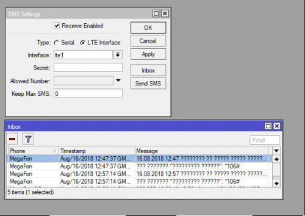
Пример команд в консоли
/tool sms print status: running receive-enabled: yes port: lte1 channel: 0 secret: allowed-number: auto-erase: no sim-pin: /tool sms set port=lte1 receive-enabled=yes /tool sms inbox print # PHONE TIMESTAMP MESSAGE 0 MegaFon Aug/16/2018 12:47:37 GMT +3 16.08.2018 12:47 ???????? ?? ????? ????? ?????????????. ??????????? 1 MegaFon Aug/16/2018 12:47:37 GMT +3 ??? ??????? "????????? ??????": *106# 2 MegaFon OF Aug/16/2018 12:56:11 GMT +3 ??? 200 16.08.18 12:53 ofd.ru 3 MegaFon Aug/16/2018 12:57:14 GMT +3 16.08.2018 12:57 ???????? ?? ????? ????? ?????????????. ??????????? 4 MegaFon Aug/16/2018 12:57:14 GMT +3 ??? ??????? "????????? ??????": *106#
Сравнение Mikrotik R11e-LTE/4G и USB модемов со Stick или HiLink прошивкой
Mikrotik поддерживает USB модем и других производителей, например Huawei.
На примере модема Huawei E3372, посмотрим какие есть преимущества модема R11e-LTE.
У Huawei E3372 есть две версии прошивки:
У модема Mikrotik R11e-LTE есть один очень большой недостаток перед Huawei — он не поддерживает в 3G режим DC-HSPA+ (агрегация каналов). Если у вас 3G сеть, стоит очень сильно подумать, нужен ли вам R11e-LTE. Отсутствие этого режима, может сильно сказаться на скорости Интернет’а (а может и не сказаться, т.к. не все базовые станции оператора поддерживают DC-HSPA+ и даже, если поддерживают, то не факт, что они обеспечат скорость выше HSPA+, нужно тестировать).
Недостаток сообщил, теперь о преимуществах…
Преимущества по сравнению с Stick прошивкой
С модемами со Stick прошивкой, Mikrotik работает в режиме эмуляции PPP.
Она сильно нагружает Mikrotik и ограничивает скорость до примерно ~20 мбит/с. Т.е. если вы подключились к LTE сети, где реально скорость >50 мбит/с, то вы будете ограничены примерно 20 мбит/с.
Для 3G сетей это не критично, т.к. там редко бывает > 20-25 мбит/с.
Преимущества по сравнению с Hilink прошивкой
Когда в модеме используется HiLink прошивка, то сам модем выступает в роли маршрутизатора. В нём начинает работать NAT, Firewall, DHCP сервер и т.д.
В Mikrotik модем виден как LTE интерфейс с минимальным функционалом.
Недостатки:
У Mikrotik R11e-LTE удобней и надёжней коннекторы для антенны, он рассчитан на эксплуатацию в жёстких условиях (не все USB модемы переживают перепады температуры и влажности). Нет проблем с питанием от USB.